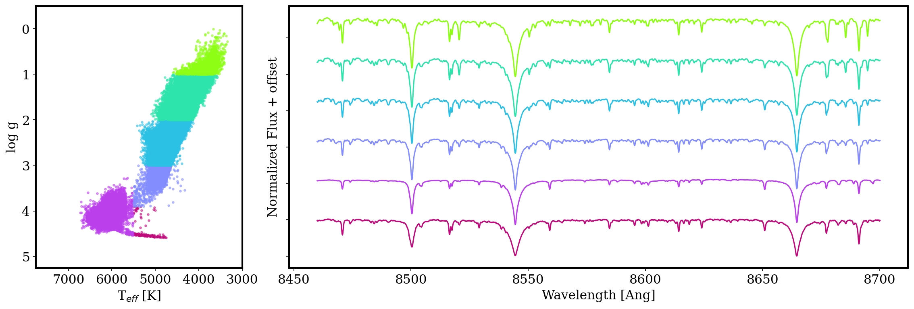

Stars have fingerprints! The wavelengths of light absorbed by a star's atmosphere reveal which elements are present and gives us a window into the Milky Way's past. This tool lets you explore how those fingerprints change across the Kiel diagram (close relation to the HR diagram), which maps stars by their surface temperature (Teff) and surface gravity (log g). This diagram is also split by metallicity, which generally increases from left to right and is represented by the different shades of colors. Together, these parameters tell us what kind of star we're looking at and where they might be on their evolutionary journey.
To use: click any point on the Kiel diagram to select a stellar population (Box A). Then click a second point to compare and the two stacked spectra will appear side by side with a difference spectrum below. Use the element toggle buttons to highlight the wavelength regions sensitive to specific atomic species. Please note that this feature is intended to be used on desktop!
The stars here come from the Gaia RVS survey cross-matched with APOGEE DR17 and have a signal-to-noise ratio above 100. I specifically chose subgiant and giant stars for this visualization so you could see the metallicity gradient across the Red Giant Branch, but I included dwarfs and Main Sequence Turn Off stars for completeness. Be mindful that because the metal-rich and metal-"normal" dwarfs overlap in Kiel space, they may require more careful selection in the visualization! These stars are grouped by their position in the Kiel diagram and by metallicity ([Fe/H]) into metal-poor, metal-normal, and metal-rich bins. Each bin's spectrum is an inverse-variance weighted sum of the spectra in that bin. To explore which elements can be found in this region of the spectrum, you can toggle the different element (or molecular) buttons.
The three deep absorption features dominating these spectra are the Calcium II infrared triplet (CaT), found at 8498, 8542, and 8662 Å. These lines are among the strongest features in the optical/near-infrared spectrum of cool stars, and are incredibly sensitive to both surface gravity and metallicity — making them a powerful diagnostic for stellar population studies.
Notice how the line depths and widths change systematically as you move across the Kiel diagram — giants (top of plot) show deeper lines than dwarfs (bottom of plot) at the same temperature, and metal-poor stars show visibly weaker features than their metal-rich counterparts which is visible in the exploration above.

Inverse-variance weighted stacked spectra across six stellar populations in the Kiel diagram, offset for clarity. Each color corresponds to a different region of the diagram as shown on the left.
Data: Gaia RVS Spectra · Stellar parameters from APOGEE · Built with Bokeh